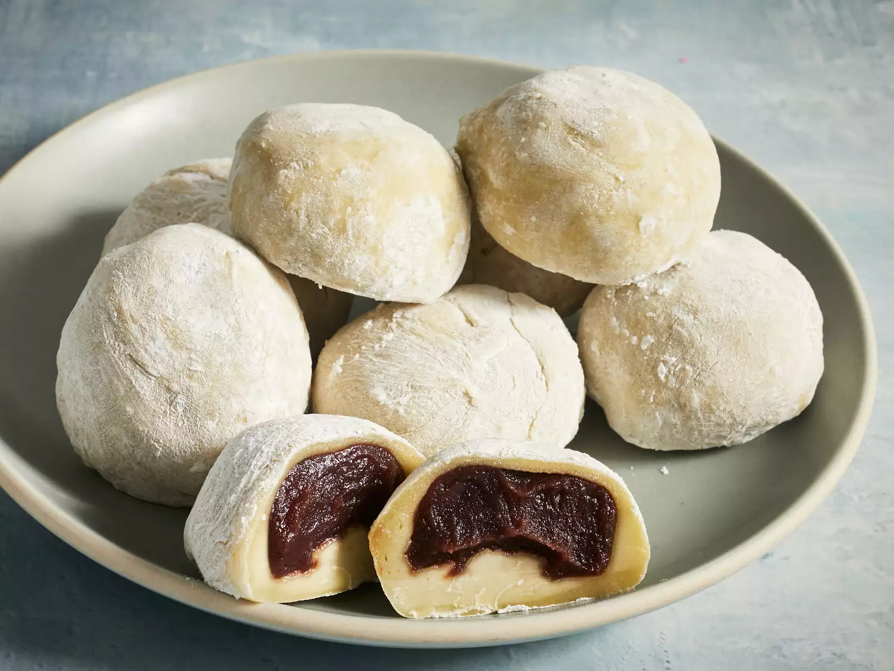

Easy Mochi

Description
Mochi are small, sweet Japanese cakes made with glutinous rice flour
(mochiko). They have a soft, chewy outer layer and a deliciously sticky
filling made of sweetened red bean paste. Freezing the red bean paste
before you use it is optional but it does make the process easier.
Satisfy your sweet tooth with homemade mochi. Trust us: The process is way
simpler than you think. This easy mochi recipe comes together quickly with
just a few ingredients.
Ingredients
- 1 cup sweetened red bean paste
- 1 cup glutinous rice flour
- 1 teaspoon green tea powder (matcha)
- 1 cup water
- ¼ cup white sugar
- ½ cup cornstarch, for rolling out the dough
Steps
- Gather all ingredients.
-
Wrap red bean paste in aluminum foil and place in the freezer until
solid, at least 1 hour.
-
Mix glutinous rice flour and green tea powder thoroughly in a
microwave-safe bowl.
- Stir in water, then sugar; mix until smooth.
-
Cover the bowl with plastic wrap and microwave for 3 minutes 30 seconds.
-
Meanwhile, remove red bean paste from the freezer and divide into 8
equal balls. Set aside.
-
Remove rice flour mixture from the microwave. Stir and heat, covered,
for another 15 to 30 seconds.
-
Dust a work surface with cornstarch. Roll about 2 tablespoons of hot
rice flour mixture into a ball. Flatten the ball and place one ball of
frozen red bean paste in the center. Pinch and press the dough around
the bean paste until completely covered.
-
Sprinkle with additional cornstarch and place mochi, seam-side down, in
a paper muffin liner to prevent sticking.
- Repeat Step 6 to make remaining mochi.
- Enjoy!